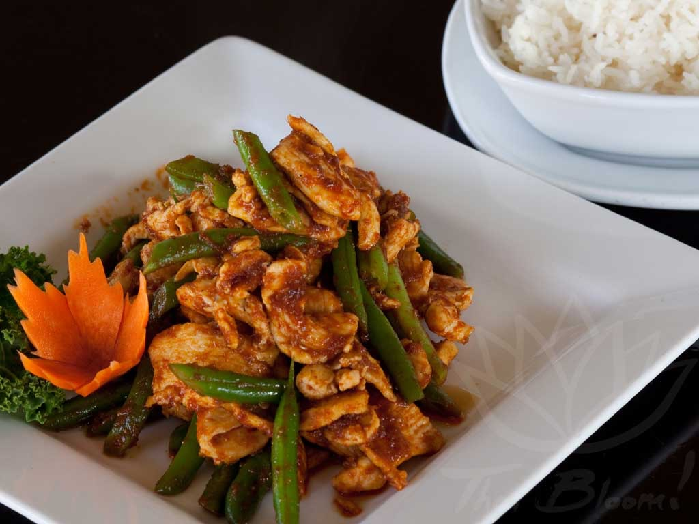

Pad Prik King

My favorite Thai dish. It's super important to get real Kaffir Lime leaves as they are what gives the dish it's signature herbaceous
flavour. You can also substitue the chicken with any other protien you want, pork, beef, shrimp, and tofu are all good options.
Ingredients
- 1 lb Chicken, Cut into Cubes
- 5 Tsp Fish Sauce
- 3-4 Tbsp Red Curry Paste
- 1/2 cup Chicken Stock
- 2 Tbsp Sugar
- 1 1/2 Cup Long Bean, Cut into 1.5 inch pieces
- 7 Kaffir Lime Leaves, Shredded
Steps
- Toss chicken with 2 tsp of fish sauce, then add a little vegetable oil and toss to coat—this is just to help the chicken spread more
easily in the wok, and it also helps keep the moisture in while you sear. Let chicken marinate while you prep other ingredients,
about 15 minutes
- In a wok or a large saute pan, add just enough vegetable oil to coat the bottom and heat over high heat until the pan is very hot.
Add just enough chicken so they're not crowding in the pan (I do this in 2 batches), spread the pieces apart and sear without stirring
until browned, about 1 minute. Once browned, stir the chicken briefly just to cook the surface of the other side, and then remove from
the pan—the chicken should only be partially cooked at this point. Repeat with the remaining chicken.
- Let the pan cool a bit, then with the heat off, add about 2 Tbsp of vegetable oil and the curry paste. Stir the curry paste in the
oil until it's loosened, then turn the heat on to medium. Cook the curry paste, stirring constantly, until it is thickened.
- Stir in the sugar, fish sauce (start with 1 tsp if you're not sure how salty the curry paste is), and deglaze with ¼ cup of chicken stock.
Keep stirring until the sugar is mostly dissolved, deglazing with more stock as needed if it starts to stick to the pan
- Add the torn kaffir lime leaves and let them infuse into the sauce for about 30 seconds.
- If the sauce looks thick, add a little more chicken stock to get it into an pourable consistency. Add the partially cooked chicken and
toss just to coat in the sauce. Add the long beans and cook until the chicken is fully cooked and the sauce is no longer pooling and the
curry paste is coating the chicken and the beans.
- Serve and enjoy